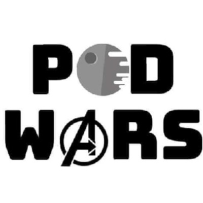

Home
About
Pod Wars Podcast
"Dissecting Star Wars, Marvel, and geeky media, while introducing you to created works that interest us."
Where to listen
Contact us
askpodwarspodcast@gmail.com
Social Media
Tweets by PodWarsPodcast
Follow @PodWarsPodcast
Powered by Penzi.
Site created by Christopher Penzi.
>